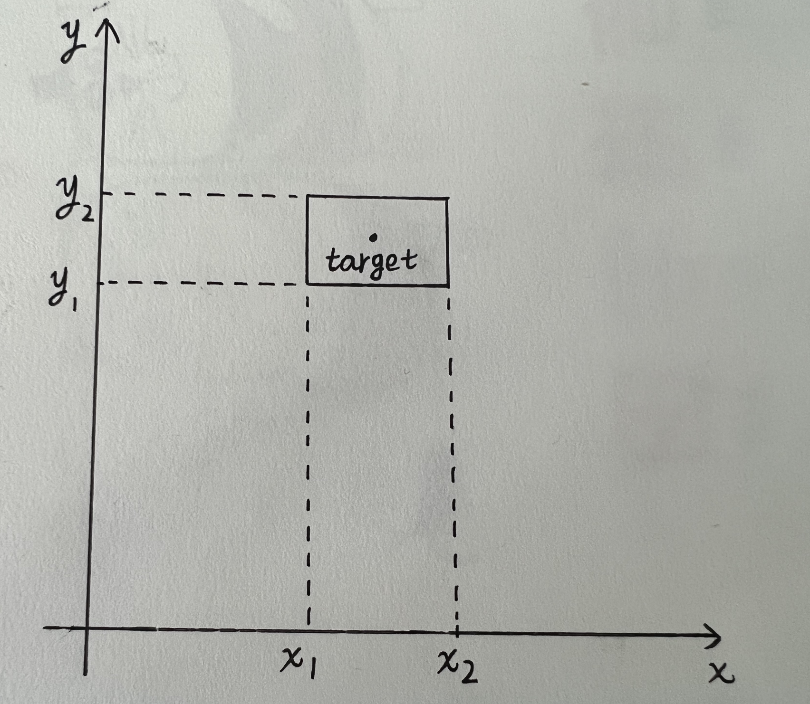

-
1. What's the time complexity of the following code, and why?
var a = 0; for (var i = 0; i < N; i++) { for (var j = N; j > i; j--) { a = a + i + j; } }答案是：T(n) = O(n²)。
可以通过写个方法来计算这个代码的开销。function CalcCost(n) { var cost = 0; var a = 0; for (var i = 0; i < n; i ++) { cost++ for (var j = n; j > i; j--) { cost++ a = a + i + j; } } return cost === (1 + n) * n / 2 + n) } CalcCost(1) // true CalcCost(100) // true CalcCost(10000) // true通过传递不同的 n 值，得到的开销都是 (1 + n) * n / 2 + n。计算后即可得出复杂度为 O(1.5n + 0.5n²)，去掉系数和低阶项，得出 T(n) = O(n²)。 -
2. Tell the differences between a byte, a character, and a string. Tell the differences between Unicode, UTF-8, UTF-16, GB2312, andGB18030.
Byte 是一个计量单位，用来表示数据量的大小。Character 表示的是单个字母、符号、数字等可以使用计算机表示的符号，可以用 Byte 来表示在不同编码格式里所存储一个 Character 所需要的 Byte。而 String 则是多个 Character 所构成的一组字符。
Unicode 可以将字符转换成对应范围的数字，UTF-8 和 UTF-16 都是 Unicode 的一种编码实现，用于将 Unicode 编码得到的数字转换成程序数据便于计算机存储，区别在于它们的存储单位不一样，UTF-8 可以对不同的字符使用1-4个字节来进行存储，而 UTF-16 里大部分字符使用2字节来存储，且， UTF-8 支持 ASCII 编码，而 UTF-16 不支持。
GB2312 和 GB18030 主要都是用来支持汉字的编码，GB18030 是 GB2312 的升级版，采用了类似于 UTF-8 的可变字节编码，支持更多的字符，同时还支持了 Unicode。
有一个延伸，就是为什么有了 UTF-8 这么庞大的字符编码，也包含了绝大多数的汉字在里面，还要去制定 GB2312 或者 GB18030呢？首先 GB2312 是在 1980 年提出的，当时的 Unicode 对汉字的支持并不完整；其次汉字在 UTF-8 编码转换后，得到的是一个需要用3字节来存储的数据，相对于以英语为母语的国家，1个字符只占一个字节来说，存储的成本是很高的。而 GB2312 编码转换后只需要2个字节来存储，节省了空间，即将要实施的 GB18030 采用了可变的字节编码，部分汉字可以做到只用1个字节，进一步提升了存储的效率。
-
3. What are the mobile and desktop operating systems you use everyday? What applications do you use frequently? Can you name a few of them and tell how they can be improved or have bugs fixed?
Mobile System: iOS
Desktop System: Mac OS
锤子便签：我经常会使用这个App来做一些零碎的记录，比如摘抄一些看书时觉得好的句子，记录一些梦境，还有自己的一些感悟，也算是一个忠实用户了，喜欢它简洁的界面。但有些交互上的体验不是很好。
① 通过从左往右的滑动内容页来返回到列表页的时候，几乎要滑动超过50%的屏幕宽度才可以返回成功，类似于图一这样的操作，因为滑动距离不够，还是不能返回成功，这显然不是很方便，特别是在手机屏幕过宽的时候，单手操作会比较费劲，设置为屏幕宽度的百分之二三十就好。
② 图二里所圈出来的地方，本来是作为一个文件夹的筛选列表是没有问题的，但是这一小块里还包含了对所有文件夹的管理，编辑和删除都在这个限定的区块内，如果文件夹一旦过多，就会非常的麻烦，且不支持搜索，我觉得应该把对文件夹的管理放到一个单独的模块里去，用一整个页面来做管理，会更高效些。
iPhone 自带的相册：现在手机相机越来越高级，拍下来的照片里，同时也保存了拍摄照片时的位置信息，如果能在查看照片信息的时候，再计算出一个当时拍摄地距现在所处位置的一个距离，XXX公里，更能为这个事物的存在添加一些佐证，因为摄影的真谛就是，"这个存在过"。
-
4. What is the difference between Factory and Builder design patterns? What is the difference between Adapter and Decorator design patterns? Give an example for each above pattern.
工厂模式和建造者模式的区别：工厂模式主要关注对象实例的创建，会封闭整个创建过程；而建造者模式相反，关注的是创建的过程，将创建的方法模块化，从而更好的复用。前者是为了将对象的创建与对象的实现分离，后者是为了将一个复杂对象的构建层和其表示层分离。
// 工厂模式示例 class Apple { eat() { console.log('苹果真甜') } } class Lemon { eat() { console.log('柠檬真酸') } } const fruitTypes = { Apple, Lemon} class FruitFactory { static create(type) { return new fruitTypes[type] } } const apple = FruitFactory.create('Apple') const lemon = FruitFactory.create('Lemon') apple.eat() // '苹果真甜' lemon.eat() // '柠檬真酸'// 建造者模式示例 class MilkTeaBuilder { constructor(volume = '300ml') { this.volume = volume } addMilk(type) { const milk = {} switch (type) { case 'low-fat': milk.type = 'low-fat milk' break case 'whole': milk.type = 'whole milk' break } this.milk = milk return this } addTea(type) { const tea = {} switch (type) { case 'red': tea.type = 'red tea' break case 'green': tea.type = 'green tea' break } this.tea = tea return this } } const milkTea = new MilkTeaBuilder('500ml').addMilk('whole').addTea('red') console.log(milkTea) // 输出 // MilkTeaBuilder { // volume: '500ml', // milk: { type: 'whole milk' }, // tea: { type: 'red tea' } // }适配器模式和装饰者模式的区别：适配器模式其实是因为原来的接口不可用后，提供一种新的接口来满足新的使用场景；而装饰者模式并不会改变原来的接口，只是在原来接口的基础上包装一个新的类出来，提供新功能的同时，还可以继续使用旧的功能。
// 适配器模式 function Transaction() { this.getGasFee = function (capacity, coinPrice) { /* ... */ return 100 } } function AdvancedTransaction() { this.setCapacity = function (capacity) {/* ... */} this.setCoinPrice = function (coinPrice) {/* ... */} this.calculateGasFee = function () { /* ... */ return 'new gas fee' } } function TransactionAdapter() { const transaction = new AdvancedTransaction() return { getGasFee: function (capacity, coinPrice) { transaction.setCapacity(capacity) transaction.setCoinPrice(coinPrice) return transaction.calculateGasFee() } } } const transaction = new Transaction() const oldGasFee = transaction.getGasFee(666, 1000) console.log(oldGasFee) // 100 const adapter = new TransactionAdapter() const newGasFee = adapter.getGasFee(666, 1000) console.log(newGasFee) // 'new gas fee'// 装饰者模式 function Box(volume) { this.volume = volume this.getVolume = function () { console.log(this.volume) } } function DecoratorBox(box, length, width, height) { this.box = box; this.volume = box.volume this.length = length this.width = width this.height = height this.getVolume = function () { console.log(length * width * height + 'cm³') } } const box = new Box(10) box.getVolume() // 10 const decoratorBox = new DecoratorBox(box, 2, 4, 6) decoratorBox.getVolume() // '48cm3' -
5. What computer languages do you master? What're the pros and cons of each of them?
目前使用得最熟练的语言是 JavaScript，优缺点都是跟其他语言对比出来的，下面列举一些我的理解。
优点:
① 简单易上手：相比于 JAVA 这样的强类型语言，JS 没有类型的定义，完全动态的去决定结果该是什么类型，理解后写起来代码简洁，不需要去做很多的预设。
② 单线程：JS 的一个核心能力，就是可以操作 DOM，单线程的设计避免了资源的竞争和状态同步的问题。
③ 对象操作简单：JS 提供了对象字面量的方式来定义对象，这种写法就是最流行的数据交换格式（JSON）的灵感来源。动态的原型链设置，给对象添加了继承的特性。
④ 函数是顶级对象：这给 JS 赋予了写出更具模块化、可读性更高的代码的可能。
缺点:
① 可变的类型：这是把双刃剑，优点前面提及了，缺点是你在写代码的时候就已经假设变量会存放一个什么类型的值，一旦计算得到的值不是预设的类型，就可能会引发错误。
② 全局变量：无论是在浏览器还是NodeJS里，JS 的运行环境依赖于全局变量，并且你还可以在任何地方去修改它，这就导致它很不受控制，导致程序的行为变得复杂，也容易与子程序里同名的变量名称起冲突。
③ 类型：JS 提供了很多API来做类型转换，但这里面有许多需要注意的地方，比如 parseInt('100'， 10) 和 parseInt('100kg')，这两个得到的结果是一致的，因为 parseInt 遇到非数字时就会停止解析；typeof null 的结果是 'object' 而不是 null，这是因为 JS 没有 null 类型，但 JS 里的一切都是对象。
④ 浮点数：在 JS 里执行 0.1 + 0.2，得到结果并不是0.3，而是一个近似数。这是因为 JS 采用的算术标准IEEE 754下，有些小数不能用完整的二级制来表示，这导致了浮点数的计算某些时候是不准确的。
-
6. Explain the differences between mutable and immutable objects.
它们的区别体现在修改对象属性时，在可变对象上修改某个属性的值，是在原对象的上进行修改，会让原对象发生变化；而不可变对象被修改时，会对原对象进行一个拷贝，然后在拷贝得到的对象里进行修改，返回这个新得到的对象。
-
7. Use JavaScript to implement the 'reactive' and 'computed' functions so that the following code works as expected.
const node = reactive({ leftChildren: 1, // rightChildren: 0 }) console.log(node.leftChildren, node.rightChildren) // 1 undefined const children = computed(() => node.leftChildren + (parseInt(node.rightChildren) || 0)) console.log(children.value) // 1 node.leftChildren = 10 console.log(children.value) // 10 node.rightChildren = 2 console.log(children.value) // 12function reactive(obj) { const { prototype: proto, prototype: {dep = {}} } = Object return new Proxy(obj, { get: function (target, propKey) { if (proto.currentGetter) { // 依赖收集 if (dep[propKey]) { dep[propKey].push(proto.currentGetter) } else { dep[propKey] = [proto.currentGetter] } } return target[propKey] }, set: function (target, propKey, value) { if (target[propKey] !== value) { target[propKey] = value // 当被依赖的属性被修改时，更新缓存中存储的数据 if (dep[propKey]) { dep[propKey].forEach(getter => { const key = getter.toString() proto[key] = { value: getter() } }) } } } }) } const node = reactive({leftChildren: 1}) console.log(node.leftChildren, node.rightChildren) // 1 undefined function computed(getter) { const { prototype: proto } = Object const key = getter.toString() proto.currentGetter = getter // 第一次执行时缓存数据 proto[key] = { value: getter() } proto.currentGetter = null return new Proxy({}, { get: function (target, propKey) { if (propKey === 'value') { // 从缓存中取出数据返回 return proto[key]?.value } } }) } const children = computed(() => node.leftChildren + (parseInt(node.rightChildren) || 0)) console.log(children.value) // 1 node.leftChildren = 10 console.log(children.value) // 10 node.rightChildren = 2 console.log(children.value) // 12 -
8. Given a number of rectangles defined by their width, height, and location (x, y) of their top-left corners, how can we insert a new rectangle(with a fixed size) as close as possible to a desired target location, without making it intersect with any existing rectangles?
先画一个矩形在坐标系中的投影
假设有两个矩形，r1(x1, x2, y1, y2) 和 r2(x1, x2, y1, y2) ,如果两个矩形不重叠，需要同时满足下面的条件
① r1.x1 >= r2.x2 || r1.x2 <= r2.x1
② r1.y1 >= r2.y2 || r1.y2 <= r2.y1
这样我们可以先根据指定放置矩形的目标位置和固定大小，来得出这个矩形在坐标系里最接近的位置，假设目标位置为（10, 10），宽高均为 4，那么这个矩形就可以用 r(8, 12, 8, 12) 来表示。
然后遍历现有的矩形数组，如果X轴有重叠，那么就考虑左右移动，即同时改变 x1 和 x2 的值，保证
① x2 - x1 = 4
① x1 <= 10 && x2 >= 10
Y 轴也是同样的比较方式，最终可以得出最接近目标位置且不与其它矩形相交的坐标